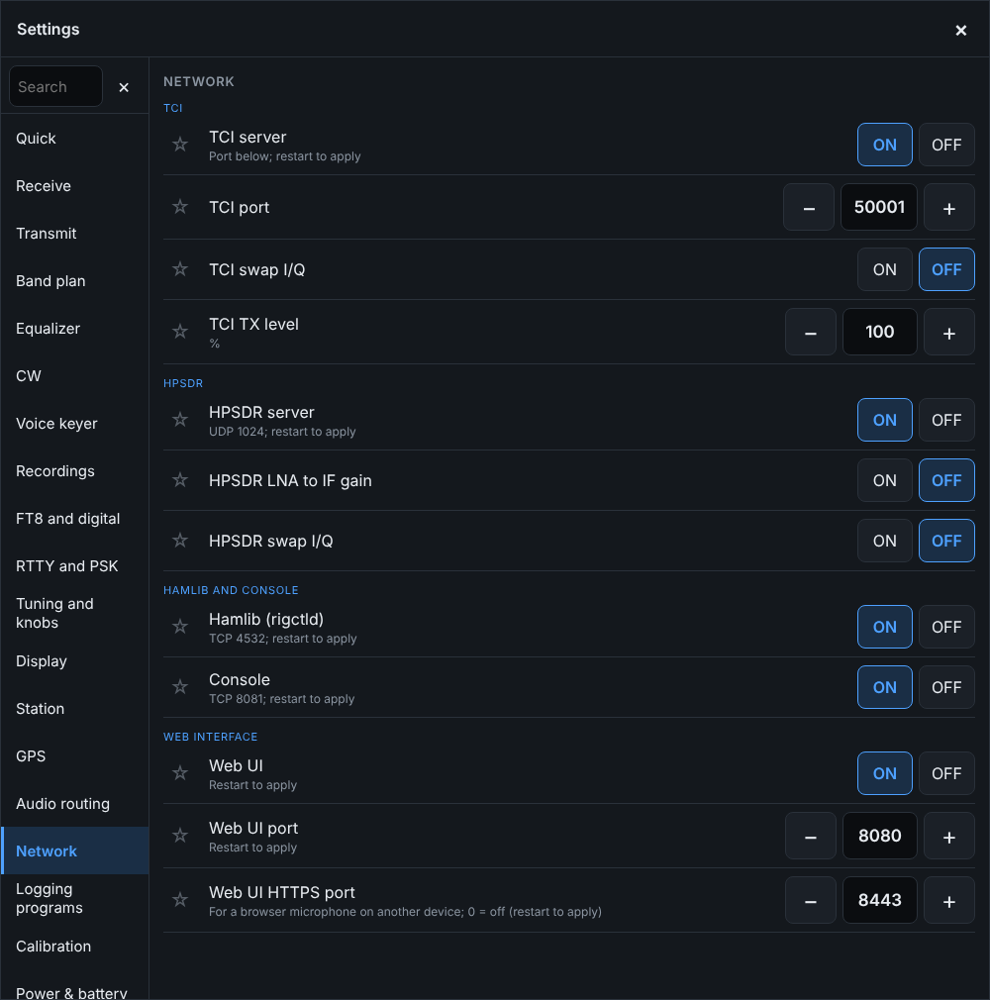
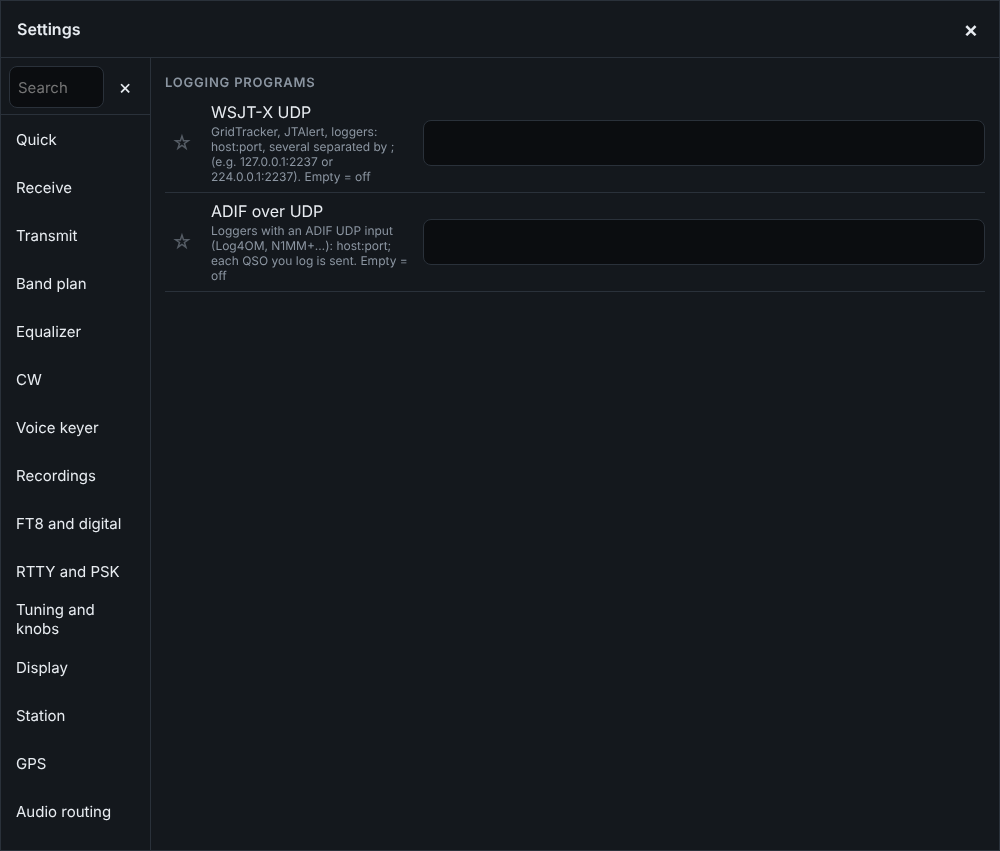

Connecting other programs#
The radio serves itself to other programs on the Pi and on your network:
| Interface | Port | Use it for |
|---|---|---|
| Hamlib rigctld | TCP 4532 | WSJT-X, fldigi, JS8Call, loggers (rig Hamlib NET rigctl) |
| TCI (WebSocket) | TCP 50001 | SDROxide, loggers, TCI-aware apps: IQ to the program, TX audio modulated by the radio, two-way control |
| HPSDR Protocol 1 (Hermes-Lite 2) | UDP 1024 | SDROxide, SparkSDR, SDR Console: the program does the DSP and sends TX IQ |
| Web UI | TCP 8443 (HTTPS), 8080 | the radio's screen in any browser |
| Console | TCP 8081 | set-up and status (Console commands) |
| Audio devices | PipeWire: jeSDR Receive, jeSDR Transmit, jeSDR Speaker | the radio's audio for programs on the Pi (below) |
| MIDI | ALSA jeSDR:Controls | the knobs, key and PTT (MIDI) |
| WSJT-X UDP, ADIF UDP | your choice | GridTracker, JTAlert, Log4OM, N1MM+ |
WSJT-X, fldigi and other Hamlib programs#
- Choose DIGI on the radio (or let the program switch it: asking for PKTUSB selects DIGI).
- In WSJT-X: Settings → Radio: rig Hamlib NET rigctl, network server
127.0.0.1:4532(or the radio's address from another computer), PTT method CAT. - Settings → Audio: input jeSDR Receive, output jeSDR Transmit (see below).
Frequency, mode, PTT, split, the tuning step, volume, IF gain, squelch, NR,
NB, drive, mic gain, keyer speed, compressor, monitor and AGC all work both
ways, and changes show up at once on the radio's screen. The S-meter, power
and SWR can be read; CW text can be sent with b / \send_morse. l ? and
u ? list the supported levels and functions.
JS8Call is set up the same way (rig Hamlib NET rigctl, PTT CAT, audio jeSDR Receive / jeSDR Transmit), but choose JS8 on the radio rather than DIGI: jeSDR then also reads JS8Call through its TCP API and shows its traffic in the JS8 panel. See JS8.
Audio for programs on the Pi#
jeSDR gives programs on the Pi audio devices of their own, through PipeWire:
| Device | Kind | What it is |
|---|---|---|
| jeSDR Receive | input (a microphone, to the program) | what the radio hears: 48 kHz mono, before the noise reduction and the speaker's equalizer |
| jeSDR Transmit | output (a speaker, to the program) | what the radio sends when it transmits in DIGI or JS8 |
| jeSDR Speaker | output | played on the radio's speaker (and the headset's headphones), at the volume knob's level; the desktop's default output |
Programs that use PulseAudio or PipeWire (WSJT-X, JS8Call, fldigi, Qt and
GTK programs) list them by these names; ALSA-only programs reach them
through the pipewire (or pulse) ALSA device. No device numbers to
match, and plugging in a USB device does not move them. (jeSDR has no ALSA
loopback cards any more.)
- The audio level into the radio is the program's own output level (and the radio's Drive): keep the program's level so that the ALC meter stays low.
- The radio's codec itself is hidden from the desktop (a WirePlumber rule in the package): it carries the radio's I/Q signal, not sound to play.
- The package keeps the radio user's PipeWire running from boot (
loginctl enable-linger), so the devices are there before anyone logs in. - jeSDR Speaker asks to be the desktop's default output, so a program that just plays to "the speaker" is heard on the radio. While a program plays into it, the speaker plays that program instead of the radio's own receiver; when it stops, the receiver comes back. The speaker stays quiet while transmitting, as always.
- jeSDR Receive and jeSDR Transmit ask never to be the default. If you once chose another output in the desktop's volume menu, the desktop keeps that choice: pick jeSDR Speaker there (or in the program) instead.
status on the console shows whether a program is using each device. On
Raspberry Pi OS Lite the package installs PipeWire; programs there (fldigi
run headless, for example) use the same devices. Updating removes the
loopback set-up older installers added (/etc/modprobe.d/jesdr-aloop.conf);
the loopback cards disappear at the next reboot.
SDROxide#
TCI: in SDROxide Radio → TCI, server <radio>:50001, IQ rate 48 or
96 kHz. SDROxide sends TX audio and the radio modulates it in the selected
mode; mode, filter, NB/NR, notch, AGC, squelch, volume, lock, keyer speed, CW
macros, monitor, tune drive, RIT, XIT and split work both ways. For CW use the
key jack.
HPSDR: Radio → HPSDR → Discover; the radio appears as a Hermes-Lite 2. Use 48 or 96 kHz and leave Swap I/Q on (if the spectrum is upside down, turn it off in SDROxide or set HPSDR swap I/Q, not both). SDROxide modulates and sends IQ; full scale is the radio's calibrated full power at Drive 100.
Hearing SDROxide on the radio's speaker: SDROxide demodulates for itself and plays to the Pi's default output, which is jeSDR Speaker: its audio comes out of the radio's speaker, at the radio's volume knob, in place of the radio's own receiver while SDROxide plays. If it plays elsewhere, choose jeSDR Speaker as SDROxide's audio output (or in the desktop's volume menu).
With a TCI client the radio's mode follows the client's: USB, LSB, CW, AM, FM and DIGL switch the radio. DIGU keeps the radio's own digital mode (FT8, FT4, FT2, JTTY, RTTY, PSK, RADE, DIGI) and otherwise chooses DIGI; in JS8 the radio stays in JS8 (JS8Call asks for USB). With Speaker follows TCI the radio's own receiver tunes to where you click in the client's waterfall (what you hear when SDROxide is not playing).
Speaker follows TCI (FOLLOW, ON) is under More → Network → TCI:
| Setting | Console name | Default | Values | What it does |
|---|---|---|---|---|
| Speaker follows TCI | FOLLOW | ON | ON, OFF | Listen where the TCI client is tuned |
Browser audio#
The 🔈 button next to PTT plays the radio's receive audio in the browser (16 kHz, about 32 kB/s, after the noise reduction and equalizer). On another device it is on by default and starts at the first tap; on the radio's own screen it is hidden. Listening in this browser sets this device's volume and the delay: Low (80 ms), Normal (150 ms) or Steady (300 ms) for a poor Wi-Fi link. Nothing is sent while transmitting.
Network#
More → Network turns each server on or off and sets its port. Changes to the servers take effect after a restart of the radio.

TCI
| Setting | Console name | Default | Values | What it does |
|---|---|---|---|---|
| TCI server | TCI | ON | ON, OFF | Port below; restart to apply |
| TCI port | TCI_PORT | 50001 | 1–65535 | TCP port of the TCI server |
| TCI swap I/Q | TCI_IQINV | OFF | ON, OFF | Mirror the spectrum sent to TCI clients |
| TCI TX level | TCI_TXLEVEL | 100 | 1–200 | % |
HPSDR
| Setting | Console name | Default | Values | What it does |
|---|---|---|---|---|
| HPSDR server | HPSDR | ON | ON, OFF | UDP 1024; restart to apply |
| HPSDR LNA to IF gain | HPSDR_LNA | OFF | ON, OFF | Let the HPSDR client's LNA gain set the radio's IF gain |
| HPSDR swap I/Q | HPSDR_IQINV | OFF | ON, OFF | Mirror the spectrum sent to HPSDR clients |
Hamlib and console
| Setting | Console name | Default | Values | What it does |
|---|---|---|---|---|
| Hamlib (rigctld) | HAMLIB | ON | ON, OFF | TCP 4532; restart to apply |
| Console | CONSOLE | ON | ON, OFF | TCP 8081; restart to apply |
Web interface
| Setting | Console name | Default | Values | What it does |
|---|---|---|---|---|
| Web UI | UI | ON | ON, OFF | Restart to apply |
| Web UI port | UI_PORT | 8080 | 1–65535 | Restart to apply |
| Web UI HTTPS port | UI_TLS_PORT | 8443 | 0–65535 | For a browser microphone on another device; 0 = off (restart to apply) |
Logging programs#
More → Logging programs sends what happens on the radio to other
programs over UDP. Each setting is a list of host:port destinations
separated by ;; leave it empty for off.

- WSJT-X UDP speaks WSJT-X's own network protocol, so GridTracker,
JTAlert and the WSJT-X links of Log4OM and N1MM+ work with the radio: a
heartbeat, the status in FT8/FT4/FT2, every decode and every logged QSO
in any mode. GridTracker on the Pi:
127.0.0.1:2237; on another computer: its address and port 2237; a multicast group such as224.0.0.1:2237reaches several programs. Clicking a CQ in GridTracker answers it, and its halt TX stops transmitting. - ADIF over UDP sends each QSO you log as one ADIF record, for loggers with an ADIF UDP input (Log4OM, N1MM+, DXKeeper and others).
Only new QSOs are sent; edits and imports are not.
| Setting | Console name | Default | Values | What it does |
|---|---|---|---|---|
| WSJT-X UDP | WSJTX_UDP | (empty) | text | GridTracker, JTAlert, loggers: host:port, several separated by ; (e.g. 127.0.0.1:2237 or 224.0.0.1:2237). Empty = off |
| ADIF over UDP | ADIF_UDP | (empty) | text | Loggers with an ADIF UDP input (Log4OM, N1MM+…): host:port; each QSO you log is sent. Empty = off |